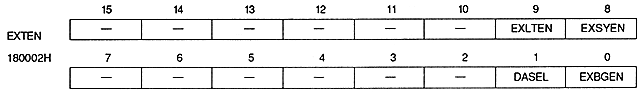

HRESO2 | HRESO1 | HRESO0 | Horizontal resolution | Graphic mode | Displayable monitor | |||||||||||||||||||||||||||||||
0 | 0 | 0 | Normal | NTSC system or | ||||||||||||||||||||||||||||||||
0 | 0 | 1 | Normal | |||||||||||||||||||||||||||||||||
0 | 1 | 0 | High-Res | |||||||||||||||||||||||||||||||||
0 | 1 | 1 | High-Res | |||||||||||||||||||||||||||||||||
1 | 0 | 0 | Special | 31 kHz monitor | ||||||||||||||||||||||||||||||||
1 | 0 | 1 | Dedicated normal | High-definition monitor | ||||||||||||||||||||||||||||||||
1 | 1 | 0 | High-resolution | 31 kHz monitor | ||||||||||||||||||||||||||||||||
1 | 1 | 1 | High resolution | High-definition monitor |

EXLTEN | Articles |
0 | Latch when external signal enable register is read |
1 | Latch by external signal |
EXSYEN | Processing |
0 | Do not input external sync signal |
1 | Input an external sync signal to synchronize the TV screen display with the outside |